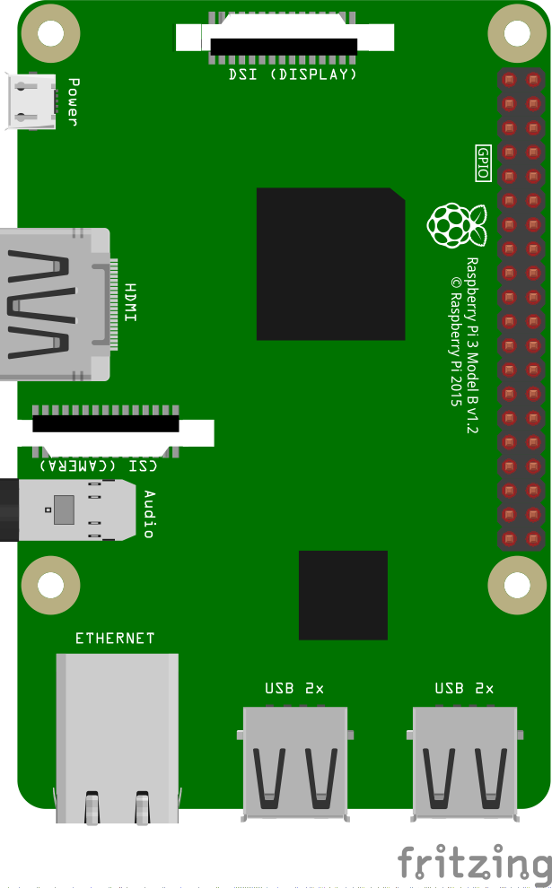
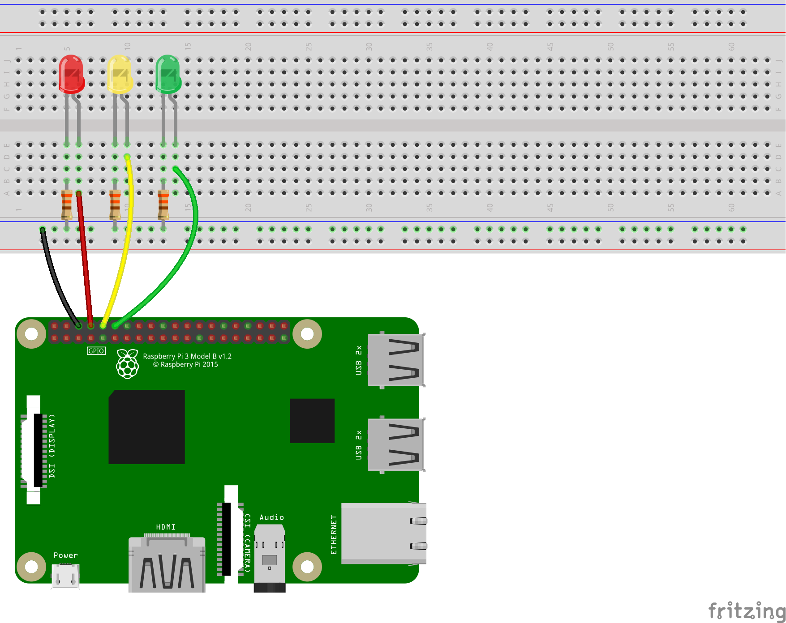
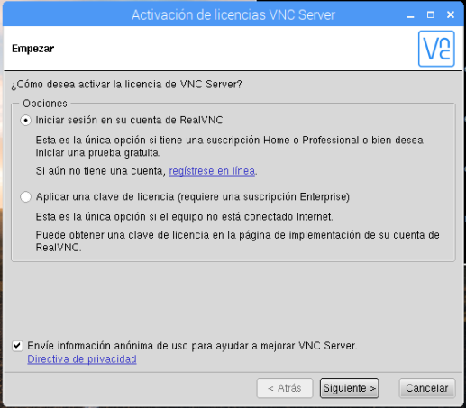
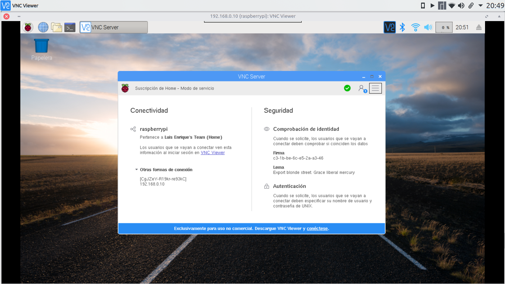
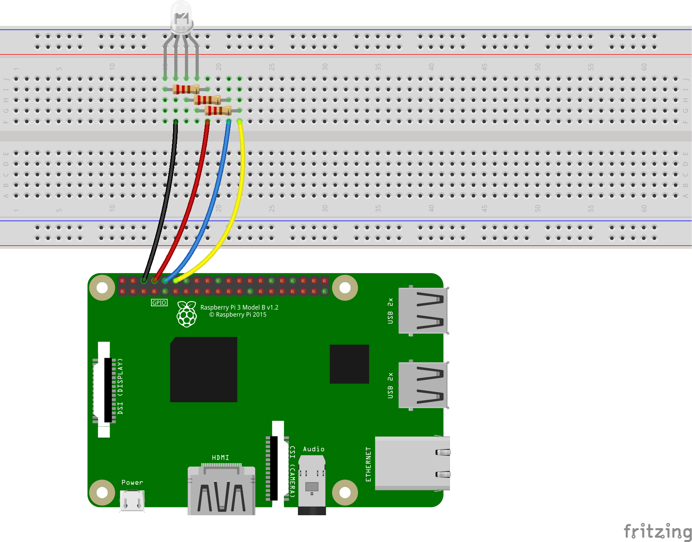
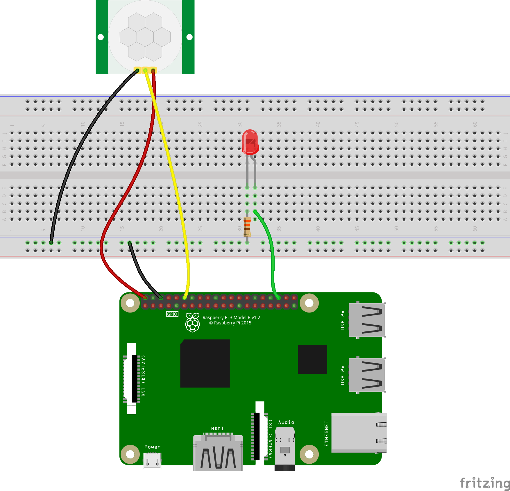
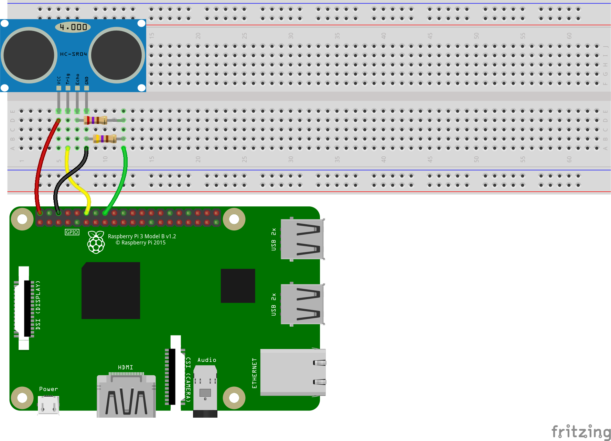
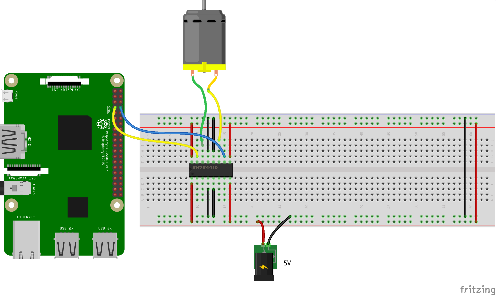
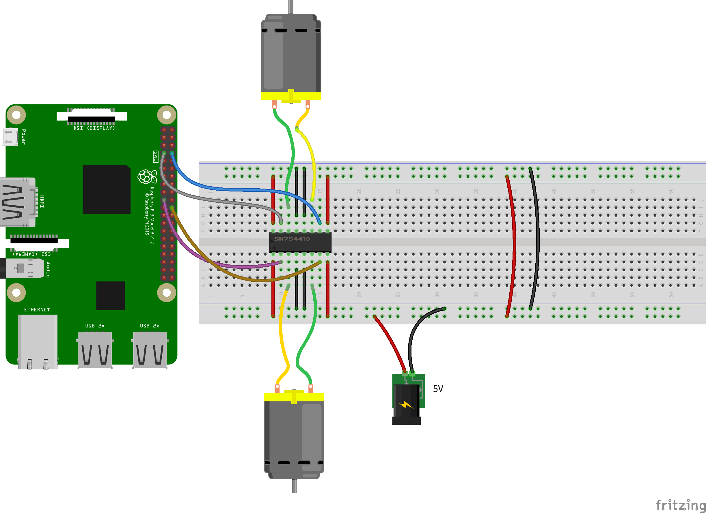

Unidad 1. Introducción a los Sistemas Embebidos.
- Introducción
- Introducción al microcontrolador
- Introducción a la Raspberry Pi.
- Instalación del Sistema Operativo
- Los pines GPIO
- Práctica 1. Encendiendo un LED
- Práctica 2. Programando secuencias: un semáforo
- Práctica 3. Controlando remotamente la Raspberry
- Práctica 4. Recibiendo la señal de un botón push
- Práctica 5. Encendiendo un LED con un botón
- Práctica 6. Controlando un LED RGB
- Práctica 7. Sensor de movimiento
- Práctica 8. Sensor de proximidad
- Práctica 9. Control del giro de un motor
- Práctica 10. Control del giro de dos motores
Introducción
Un sistema embebido se corresponde con un sistema informático que ha sido diseñado y construido con una función única, o quizás unas cuantas de ellas, pero todas dedicadas. Otras de sus características son que el sistema trabaja en tiempo real y todos los componentes se encuentran en la propia placa base. Es decir, los puertos de conexión a la red, los puertos USB, el hardware de salida de audio y video, etcétera, se encuentran incluidos ya en la placa, la cual tiene un tamaño aproximado al de una credencial de identificación INE o una tarjeta de crédito.
Diferentes tipos de sistemas embebidos
Los sistemas que mayor auge tienen en la actualidad se pueden dividir en dos tipos diferentes, cuya distinción se hace con base en si utilizan un microcontrolador o un microprocesador como unidad central. Entre los primeros se encuentra como principal representante la placa Arduino, y entre los segundos la Raspberry Pi. A continuación se muestra una tabla comparativa entre ambos sistemas.
| Característica | Microcontrolador | Microprocesador |
|---|---|---|
| Velocidad de operación | Su frecuencia es del orden de los MHz | Su frecuencia es del orden de los GHz |
| Elementos necesarios | Usualmente solo necesitan ser energizados | Necesitan una memoria RAM, una ROM y un decodificador de direcciones |
| Costo | Bajo, oscilando entre \(\$120\) y \(\$400\) | Medio, entre \(\$700\) y \(\$1,500\) |
| Afectación por ruido magnético | Poca | Media, al requerir mayor cantidad de conexión entre sus componentes |
| CPU | Capacidad de procesamiento bajo, ideal para monotareas | Ideal para procesamiento de datos |
| Memoria RAM y ROM | Se incluye en el microcontrolador | Necesarias, pero añadidas por separado en la placa base |
Con lo anterior, podemos concluir que para una aplicación en la que sea necesario monitorear el exterior por medio de sensores o controlar algún proceso por medio de motores, lo más conveniente es usar un microcontrolador (Arduino); pero si lo que se busca es procesar un conjunto de datos, implementar una interfaz gráfica de usuario o transferir información por medio de internet, un microprocesador (Rasberry) sería lo más conveniente, aunque también es posible integrar ambos de ser necesario.

Arduino
Raspberry
Introducción al microcontrolador
Al elegir trabajar con un microcontrolador deben tomarse en cuenta las siguientes especificaciones técnicas.
Pines de propósito general (GPIO)
Son las diferentes entradas y salidas con las que cuenta el microcontrolador, se emplean para obtener los valores de diferentes sensores, establecer comunicaciones con otros dispositivos y controlar elementos desde LED hasta motores de gran potencia. Pueden ser:
- Entradas y salidas digitales
- Entradas analógicas
- Salidas analógicas o PWM
- Puertos de comunicación
Con relación a los pines GPIO se debe considerar el número de cada tipo de pin que se requiere al seleccionar el microcontrolador para que este sea capaz de controlar todos los elementos.
Voltaje de operación
Indica el tipo de alimentación que debe recibir el microcontrolador y los valores con los que operan sus pines de propósito general. Es importante conocer estos valores ya que de lo contario podrían dañarse componentes o bien no funcionar adecuadamente en caso de no respetarlos. Los valores más comunes son 3.3V y 5V de modo que si se opera con elementos de mayor consumo de energía se deberán utilizar etapas de potencia para controlar dichos elementos.
Velocidad de operación
También se conoce como velocidad de reloj y se refiere a la frecuencia o rapidez con la que puede procesar las instrucciones. Se debe tomar en cuenta sobre todo para aplicaciones que requieran alta velocidad de procesamiento. Algunos de los valores más comunes son 16MHz, 80MHz y 120MHz.
Resolución del convertidor analógico a digital (ADC).
Se refiere a la precisión con la que el ADC entrega el resultado de convertir un valor analógico a su equivalente en digital. Algunos de los valores más comunes de resolución son 8 bits, 10 bits y 12 bits. Una de las mayores razones por las cuales se unen Arduino y Raspberry Pi es precisamente el utilizar sensores que solo entregan salida analógica, siendo convertida en digital para la comunicación con la Raspi, ya que ésta solo admite entrada digital.
Puertos de comunicación
Se refiere a los pines que sirven para comunicar dos o más dispositivos entre sí, bajo un protocolo de comunicación estandarizado. Los protocolos mayormente empleados son la comunicación serial, I2C y SPI/SSI.
Introducción a la Raspberry Pi.
Componentes básicos
A continuación se muestra una lista con los componentes que deben tenerse a mano para comenzar con la manipulación de la pequeña placa embebida:
- La propia Raspi.
- Un alimentador de corriente micro-USB de 5V y al menos 1.2A.
- Cable HDMI.
- Tarjeta microSD de al menos 8GB de capacidad y clase 4.
- Teclado y ratón USB.
- Monitor con entrada HDMI, aunque imprescindible al principio, pierde importancia si se cuenta con una conexión a internet y a un visor remoto.
Las características indicadas para la tarjeta de memoria son las mínimas. Si se cuenta con una tarjeta de mayores prestaciones es recomendable utilizarla.
Instalación del Sistema Operativo
Preparando todo
El primer paso es formatear la tarjeta SD mediante cualquier aplicación que se tenga a la mano (no formatear con algún teléfono celular). Acto seguido, dirigirse a la página de la Fundación Raspberry Pi https://www.raspberrypi.org/ y luego a la sección de Descargas.
raspberrypi.org
En dicha sección obtendremos el sistema operativo que instalaremos en la tarjeta SD. De las dos opciones que saltan a la vista, nos quedaremos con la descarga de Raspbian (debemos asegurarnos que es la versión para Raspi, más abajo está otra que es para PC, no bajar esa última).
raspbian
Al dar clic en la imagen nos brindará tres opciones. Por cuestiones de facilidad, escogemos la versión completa «with desktop and recommended software». Es recomendable que al terminar la descarga, no se descomprima.
Instalando el sistema operativo
El archivo zip será muy pesado y lento para hacerlo. Lo ideal es utilizar una aplicación llamada Etcher, la cual es libre y puede descargarse de su página oficial: https://www.balena.io/etcher/. La aplicación es sumamente sencilla de utilizar: en la misma pantalla se selecciona la imagen a montar, luego la tarjeta (si solo hay insertada una tarjeta SD, esa será seleccionada por defecto). Clic en Flash! y listo.
etcher
¡Está viva!
Insertamos la tarjeta en la ranura adecuada de la Raspi. Conectamos el cable HDMI y los periféricos enlistados arriba. La alimentación de corriente se conecta al final. Al realizarse esto último deben encenderse dos leds de la placa: uno rojo y uno verde. El rojo indica que está energizada. El verde debe estar parpadeando y así indica lectura de la tarjeta SD. Por otro lado, en el monitor debió aparecer un flash multicolor, señal de que la salida de video es correcta. Esperamos un poco a que cargue todo y debería aparecer algo así en pantalla:
desktop
La ventana que aparece en la captura es el gestor de configuración de la Raspberry. Es buena idea adecuar la localización al país de uso (México) en la última pestaña. Con eso hecho, hay que ejecutar unos cuantos comandos para irse familiarizando con el sistema operativo (el cual es Linux). Conectamos la placa a internet mediante WiFi o ethernet, actualizamos la lista de repositorios y enseguida actualizamos el sistema.
Actualizando y limpiando el sistema
Actualizar los repositorios nos sirve para encontrar las actualizaciones disponibles para el software instalado. En sistemas Linux basados en Debian (tales como Raspbian, Ubuntu, Linux Mint o Kali) esto se realiza mediante el comando:
sudo apt updatePara aplicar las actualizaciones disponibles se ejecuta:
sudo apt upgradeEn caso de ser necesario instalar alguna aplicación, esto se hace con:
sudo apt install aplicación-necesariaSi instalamos algo innecesario podemos eliminarlo con:
sudo apt remove aplicación-innecesariaY si queremos eliminar dependencias de aplicaciones eliminadas:
sudo apt autoremoveLos pines GPIO
Tenemos disponible la versión 3 de la placa. Ya tiene incluidas las conexiones WiFi y Bluetooth, por lo que ya no es necesario comprar los módulos pertinentes. Lo que más nos interesa son los pines que sobresalen bastante de la misma placa. Les llamamos GPIO. Son las conexiones que nos permitirán controlar motores y focos o recibir mediciones de los sensores conectados. Es muy importante tener a la mano la numeración de los mismos, ya que no sigue un orden físico. El orden de los GPIO –mirando la raspi desde arriba y con los puertos USB apuntando al suelo–, es el siguiente:

| Etiqueta | Posición física | Posición física | Etiqueta |
|---|---|---|---|
| 3.3V | 1 | 2 | 5V |
| GPIO2 | 3 | 4 | 5V |
| GPIO3 | 5 | 6 | GND |
| GPIO4 | 7 | 8 | GPIO14 |
| GND | 9 | 10 | GPIO15 |
| GPIO17 | 11 | 12 | GPIO18 |
| GPIO27 | 13 | 14 | GND |
| GPIO22 | 15 | 16 | GPIO23 |
| 3.3V | 17 | 18 | GPIO24 |
| GPIO10 | 19 | 20 | GND |
| GPIO9 | 21 | 22 | GPIO25 |
| GPIO11 | 23 | 24 | GPIO8 |
| GND | 25 | 26 | GPIO7 |
| DNC (GPIO0) | 27 | 28 | DNC (GPIO1) |
| GPIO5 | 29 | 30 | GND |
| GPIO6 | 31 | 32 | GPIO12 |
| GPIO13 | 33 | 34 | GND |
| GPIO19 | 35 | 36 | GPIO16 |
| GPIO26 | 37 | 38 | GPIO20 |
| GND | 39 | 40 | GPIO21 |
Donde el número enseguida de la palabra GPIO es el número de GPIO al que debemos hacer referencia cuando lo utilicemos en el código. Por ejemplo, el GPIO18 es el que físicamente ocupa la posición 12. Pero si en nuestro código ponemos 12 como identificador, en realidad estaremos referenciando físicamente al pin 32.
Práctica 1. Encendiendo un LED
Material necesario
- Raspberry Pi \(3\) con los componentes básicos
- Librería GPIO Zero en Python3
- Tablilla de prototipado
- Un LED (de preferencia rojo)
- Una resistencia de \(330\Omega\)
- Dos cables jumper macho-hembra
El circuito
El circuito es sumamente sencillo. Solo hay que asegurarse de que se respeta la polaridad del LED: la patita más corta debe conectarse a la resistencia y luego a tierra (GND) y la otra al GPIO elegido (GPIO18).
LED-01
El código para encender
El código es también bastante sencillo. Para comenzar a programar abrimos Menú Inicio > Desarrollo > Python 3 (IDLE). Creamos un archivo nuevo File > New File y lo guardamos (File > Save) con el nombre que queramos en una ubicación sencilla de acceder.
El código consta primero de la importación de la clase LED desde la librería GPIO Zero.
from gpiozero import LEDAsignamos la variable led al GPIO18.
led = LED(18)Encendemos el LED con el método on().
led.on()Presionamos F5 para ejecutar el código y el LED debería encenderse. Podemos detener el programa con la combinación CTRL + C. El código completo debería verse así:
from gpiozero import LED
led = LED(18)
led.on()El código para parpadear
Comenzamos importando la clase LED. Después importamos la función sleep desde la librería time.
from time import sleepAsignamos la misma variable al mismo GPIO del código anterior, pero ahora no mantendremos encendido el LED de manera permanente, si no que lo haremos parpadear con un segundo de diferencia. Para ello haremos uso de un loop infinito que encienda y apague el LED en intervalos iguales de 1, utilizando los métodos on() y off() y para permanecer un segundo la función sleep(1).
while True:
led.on()
sleep(1)
led.off()
sleep(1)Presionamos F5 para ejecutar el código y el LED debería estar parpadeando. El código final debería verse así:
from gpiozero import LED
from time import sleep
led = LED(18)
while True:
led.on()
sleep(1)
led.off()
sleep(1)Un código más sencillo (incluso)
Podemos conseguir el mismo efecto con menos líneas de código, utilizando el método blink().
from gpiozero import LED
from signal import pause
led = LED(18)
led.blink()
pause()El método permite especificar el tiempo de encendido, de apagado, número de parpadeos y si se ejecuta como un subproceso de fondo.
blink(on_time=1, off_time=1, n=None, background=True)Evidencia de producto
Documente el procedimiento para controlar el encendido de un LED mediante la Raspberry Pi. Incluya imágenes del circuito real y el código utilizado.
Práctica 2. Programando secuencias: un semáforo
Material necesario
- Raspberry Pi \(3\) con los componentes básicos
- Librería GPIO Zero en Python3
- Tablilla de prototipado
- Tres LED’s (uno de cada color -verde, amarillo y rojo-)
- Tres resistencias de \(330\Omega\)
- Cuatro cables jumper macho-hembra
El circuito
Prácticamente es el mismo circuito que la práctica anterior, pero triplicado.

Código propuesto
from gpiozero import LED
from time import sleep
rojo = LED(14)
ambar = LED(15)
verde = LED(18)
verde.on()
ambar.off()
rojo.off()
while True:
sleep(10)
verde.off()
ambar.on()
sleep(1)
ambar.off()
rojo.on()
sleep(10)
ambar.on()
sleep(1)
verde.on()
ambar.off()
rojo.off()Evidencia de producto
Modifique el semáforo programado, para mejorar su comportamiento y acercarlo al de un semáforo más realista. Documente el proceso con imágenes y el código empleado.
Práctica 3. Controlando remotamente la Raspberry
Material necesario
- La Raspberry Pi con los componentes básicos
- Una conexión a internet estable y permanente
- El dispositivo que servirá como cliente visor (una laptop, un celular, tablet, etc)
Preparando el servidor
Uno de los inconvenientes de trabajar con la placa es que es necesario conectarla a un monitor externo. En ocasiones es bastante incómodo o complicado. Sin embargo, teniendo una conexión estable y permanente a internet se puede resolver el problema. Encienda la Raspberry y asegúrese de que el servidor VNC se encuentre habilitado. Es fácil: el icono se encontrará coloreado en la bandeja, al lado de los indicadores de conexión a internet y bluetooth. Si se encuentra sombreado significa que está activado pero no hay acceso a la red. Si simplemente no se encuentra el indicador es porque no está activado VNC Server. Para activarlo, nos dirigimos a Menú Inicio -> Preferencias -> Configuración de Raspberry Pi. Aparecerá una ventana con cuatro pestañas, pero las que nos interesan son la de Sistema y la de Interfaces. Nos dirigimos a la primera y damos clic en el botón de Cambiar Clave, ahí nos pedirá que ingresemos la nueva contraseña para evitar intrusos, no olvidarla. Ahora nos vamos a la pestaña Interfaces y nos aseguramos de activar SSH y VNC. Le damos en aceptar y reiniciamos la Raspberry. Al volver a entrar a Raspbian, ya debería estar activo el servidor.
Preparando el cliente
Ahora es necesario preparar el dispositivo por el cual se desplegará remotamente el escritorio de la Raspberry Pi. Debemos descargar la aplicación adecuada (si es una laptop asegurarnos de descargar la versión adecuada al sistema operativo, en el caso de utilizar un teléfono celular, existen versiones disponibles para Android y para iOS, incluso para el navegador Chrome) desde la página oficial de VNC: https://www.realvnc.com/es/connect/download/viewer/. Instalamos la aplicación y la ejecutamos (debemos aceptar una licencia) .
Visualizando la Raspberry sin monitor
Ya estando activo el servidor en la raspberry, nos dirigimos a donde se encuentra el indicador en la barra de tareas. Damos clic derecho y enseguida se abre una ventana con la información de la raspberry en cuanto a la conexión. Nos interesa la dirección IP. La copiamos porque a ella nos conectaremos con el visor.
Ahora nos vamos al cliente y ahí accedemos a la ventana principal (después de cerrar la de bienvenida). En la caja de texto introducimos la dirección IP de la raspberry, tomando en cuenta que ambos dispositivos, cliente y servidor, deben estar conectados a la misma red. Nos pedirá que aceptemos conectarnos al servidor ya que no se ha detectado una conexión anterior. Aceptamos y enseguida debemos aportar las credenciales necesarias, el usuario por defecto es pi, mientras que la contraseña es la que se cambió en la primera parte de la práctica. Al ser autenticados, debe verse ya el escritorio de la raspberry en la pantalla del dispositivo cliente.
Acceder remotamente a la Raspberry en todo sentido
Existe una manera de acceder remotamente con un dispositivo cliente a la raspberry sin que se encuentren ambos conectados a la misma red. Esto sería muy útil también para cuando la placa no estará conectada a un monitor y no se puede saber la dirección IP y/o no se quiere fijar la misma. Para ello es necesario crearse una cuenta desde el dispositivo cliente en la página de RealVNC https://www.realvnc.com/es/, o desde la propia Raspberry en el indicador VNC, dando clic derecho y entrando a Aplicación de licencias. En la primera opción damos clic en «regístrese en línea» y se abrirá el navegador Chromium con las instrucciones pertinentes.

Con la cuenta ya creada, volvemos a ese apartado y seleccionamos la misma primera opción, damos clic en Next e introducimos nuestras credenciales. Ahora volvemos al cliente y con el visor ejecutado, damos clic en Iniciar sesión. Introducimos nuestros datos y autorizamos la conexión tanto en el correo que se nos enviará como en VNC Viewer. Posteriormente damos clic en el apartado donde aparece nuestro nombre registrado (aparece como Usuario’s Team (Home)). A la derecha estarán los dispositivos enlazados a la cuenta, damos doble clic y estaremos ya frente al escritorio de la Raspi.

Práctica 4. Recibiendo la señal de un botón push
Material necesario
- Raspberry Pi \(3\)
- Librería GPIO Zero en Python3
- Tablilla de prototipado
- Un botón tipo push
- Dos cables jumper macho-hembra
- Un cable jumper macho-macho
El circuito
El botón no tiene polaridad. Si es de cuatro pines hay que insertarlo en el canal central de la tablilla, de modo que dos pines queden en una mitad y los restantes en la otra. Si es de dos pines no es importante la ubicación.
Circuito del botón
Código para «leer» el botón
Primero importamos la clase Button desde gpiozero.
from gpiozero import ButtonAsignamos la variable boton al GPIO18:
boton = Button(18)Y ahora agregamos el método wait_for_press() para que el script se detenga hasta que el botón se active al ser presionado. Agregamos un mensaje que nos avise que el botón fue activado:
boton.wait_for_press()
print("El botón ha sido presionado")Métodos disponibles
wait_for_release(timeout=None)Comportamiento análogo al método wait_for_press, con la salvedad de que pausa el script hasta que el botón es desactivado o el timeout es alcanzado.
when_pressedLa función a correr cuando el botón cambia de inactivo a activo.
when_releasedLa función a correr cuando el botón cambia de activo a inactivo.
Un ejemplo de uso
Esperar el cambio de estado del botón y avisar sobre dicho cambio:
from gpiozero import Button
button = Button(18)
while True:
if button.is_pressed:
print("Botón presionado")
else:
print("Botón no presionado")Práctica 5. Encendiendo un LED con un botón
Material necesario
- Raspberry Pi \(3\)
- Librería GPIO Zero en Python3
- Tablilla de prototipado
- Un botón tipo push
- Un LED (de preferencia rojo)
- Cuatro cables jumper macho-hembra
- Un cable jumper macho-macho
- Una resistencia de \(330\Omega\)
Utilice lo visto anteriormente y diseñe una aplicación que encienda al LED solo al pulsar un botón. Así mismo, al soltar el botón, el LED debe apagarse.
Práctica 6. Controlando un LED RGB
Material necesario
- Raspberry Pi \(3\)
- Librería GPIO Zero en Python3
- Tablilla de prototipado
- Un LED RGB.
- Cuatro cables jumper macho-hembra
- Tres resistencias de \(220\Omega\)
El circuito
Es relativamente sencillo el armado, solo hay que mencionar que el LED RGB tiene cuatro pines, de los cuales, el más largo se corresponde con tierra. Si estamos viendo el LED de «frente», dicho pin será el segundo, contando de izquierda a derecha. Los demás se corresponden a la secuencia RGB, es decir: rojo el primero, verde el tercero y azul el último.
Contrario al LED normal, en este caso conectaremos las resistencias a los pines que irán a los GPIO, como se muestra a continuación:

El código
Definimos nuestra variable y jugamos con los parámetros de la clase RGBLED, tomando en cuenta que los mismos se corresponden con la intensidad de los colores rojo, verde y azul.
from gpiozero import RGBLED
from time import sleep
led = RGBLED(14,15,18)
led.red = 1
sleep(1)
led.red = 0.5
sleep(1)
led.color = (0, 1, 0)
sleep(1)
led.color = (1, 0, 1)
sleep(1)
led.color = (1, 1, 0)
sleep(1)
led.color = (0, 1, 1)
sleep(1)
led.color = (1, 1, 1)
sleep(1)
led.color = (0, 0, 0)
sleep(1)
for n in range(100):
led.blue = n/100
sleep(0.1)Práctica 7. Sensor de movimiento
Lista de materiales
- Tablilla de prototipado
- Un LED
- Una resistencia de $330$
- Un sensor PIR HC-SR501
El circuito
Mucho cuidado con la polaridad del sensor. Aunque se alimenta con \(5V\), entrega solo \(3.3V\), así que no requiere un circuito adicional. La resistencia es para proteger la raspi de la carga absorbida por el LED.

El código
from gpiozero import MotionSensor, LED
from signal import pause
pir = MotionSensor(14)
led = LED(16)
pir.when_motion = led.on
pir.when_no_motion = led.off
pause()Práctica 8. Sensor de proximidad
El sensor de proximidad o de distancia mide, propiamente dicho, la distancia existente desde e propio sensor hasta un obstáculo dado.
Material necesario
- Tablilla de prototipado
- RaspberryPi
- Una resistencia de \(470\Omega\)
- Una resistencia de \(270\Omega\)
- Sensor de distancia HC-SR04
- Cuatro cables jumper macho-hembra
El circuito
Se debe tener especial cuidado en el arreglo de las resistencias, ya que el sensor de distancia emite una señal de echo de 5V, la cual puede dañar la Raspberry. Para adecuarlo a 3.3V, se utiliza el par de resistencias mostrado en el circuito (en el pin de echo se conecta la de \(270\Omega\), mientras que para tierra se conecta la resistencia de \(470\Omega\)):

El código
Para la clase DistanceSensor se deben escribir los GPIO en el siguiente orden: primero el GPIO que recibirá la señal echo y enseguida el GPIO que recibirá la señal de trigger.
from gpiozero import DistanceSensor
from time import sleep
sensor = DistanceSensor(23, 18)
while True:
print('La distancia es', sensor.distance, 'mts')
sleep(1)Práctica 9. Control del giro de un motor
En esta práctica controlaremos el sentido de giro de un pequeño motor de corriente directa, presente en varios coches de juguete de control remoto. El código es bastante sencillo, utilizando la librería GPIOZero: apenas seis líneas. Sin embargo, ahora incluimos un circuito integrado, el SN754410 (o su equivalente literal, el L293D). Este CI es conocido como un puente H, por la forma en la que se dibuja en los diagramas. También se le conoce como driver para motores. Este driver permite controlar hasta dos motores y nos evita utilizar transistores y diodos en nuestro circuito.
Lista de materiales
- Un motor de corriente directa
- Raspberry Pi
- Tablilla de prototipado
- Circuito integrado SN754410 o su equivalente L293D
El circuito
NO DEBE CONECTARSE JAMÁS EL MOTOR DIRECTAMENTE A LA RASPBERRY, NI ALIMENTAR ESTE CIRCUITO CON LOS 5V DE LA MISMA. TAMPOCO CONECTARSE A TIERRA. LA ALIMENTACIÓN Y CONEXIÓN A TIERRA DEBEN VENIR DESDE UNA FUENTE EXTERNA. Es muy importante respetar el sentido del CI, ya que podemos dañarlo fácilmente. Por esta razón, cuenta con una muesca en uno de sus extremos, la cual nos indica cómo debe colocarse. En el diagrama del circuito mostrado a continuación, se muestra el CI con la muesca en el extremo izquierdo. Respetemos el orden propuesto, que se observa mejor en la segunda imagen.


En esta imagen se muestran con mayor detalle los pines del SN754410. Deben energizarse los pines 1, 8, 9 y 16 con los \(5V\) provenientes de una fuente de alimentación, jamás desde la propia Raspberry. Los pines 1 y 9 se energizan para habilitar el puente para el motor correspondiente; mientras que los pines 8 y 16 son el voltaje que hará funcionar a cada motor. Los pines 2 y 7 son para el control del motor «izquierdo», mientras que los pines 10 y 15 son su contraparte para el motor «derecho». Estos pines deben ir a algún GPIO cada uno. Los pines 3 y 6 se conectan al motor que se controlará con los pines 2 y 7. Caso parecido con los pines 11 y 14. Debe asegurarse de conectar los pines marcados como GND a tierra (se corresponden con los pines 4, 5, 12 y 13).
El código
En este código el motor se estará moviendo hacia adelante durante diez segundos y enseguida hacia atrás en el mismo lapso de tiempo:
from gpiozero import Motor
from time import sleep
motor = Motor(forward=4, backward=14)
#el primer GPIO activa movimiento hacia delante, el segundo la reversa.
while True:
motor.forward()
sleep(10)
motor.backward()
sleep(10)Práctica 10. Control del giro de dos motores
Lista de materiales
- Dos motores de corriente directa
- Raspberry Pi
- Tablilla de prototipado
- Circuito integrado SN754410 o su equivalente L293D
El circuito
Es prácticamente el mismo que el circuito que controla un motor único, con la salvedad de que se conectan los pines correspondientes al segundo y a su control.

El código
El siguiente código hará que los motores giren en cierta secuencia (si tuvieran acopladas ruedas y estuvieran montados en un chásis, seguirían burdamente una trayectoria cuadrada).
from gpiozero import Robot
from time import sleep
robot = Robot(left=(4, 14), right=(10, 25))
#se separan ambos lados por motor, y al igual que en el anterior, el primer GPIO activa el movimiento adelante.
for i in range(4):
robot.forward()
sleep(10)
robot.right()
sleep(1)Código con botones
from gpiozero import Robot, Button
from signal import pause
robot = Robot(left=(4, 14), right=(17, 18))
left = Button(26)
right = Button(16)
fw = Button(21)
bw = Button(20)
fw.when_pressed = robot.forward
fw.when_released = robot.stop
left.when_pressed = robot.left
left.when_released = robot.stop
right.when_pressed = robot.right
right.when_released = robot.stop
bw.when_pressed = robot.backward
bw.when_released = robot.stop
pause()